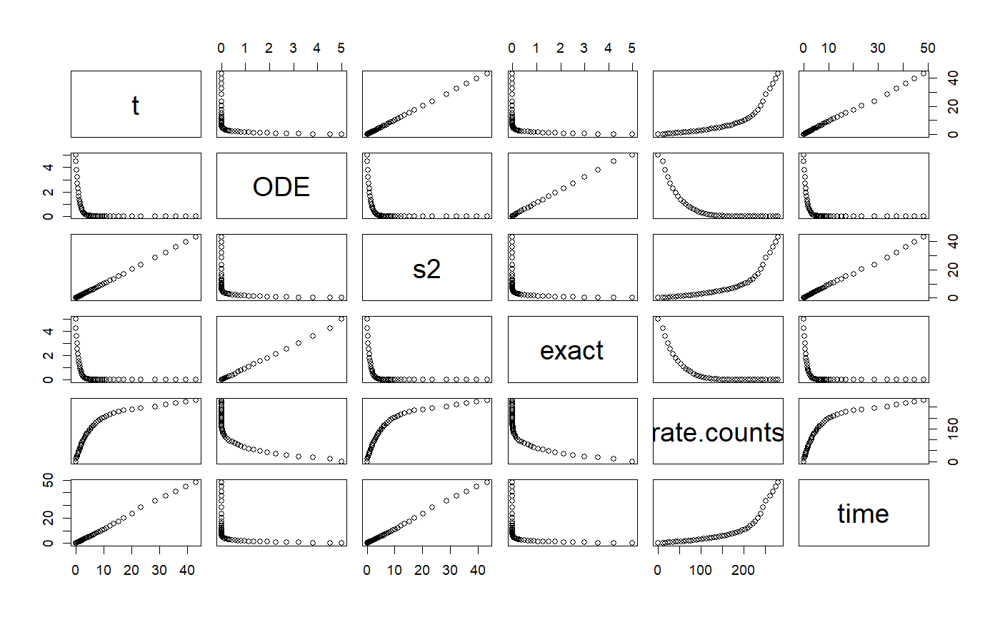

DormandPrince45 ODE solver class
DormandPrince45 ODE solver class
DormandPrince45 generic
DormandPrince45 constructor ODE
DormandPrince45(ode, ...) # S4 method for DormandPrince45 init(object, stepSize, ...) # S4 method for DormandPrince45 init(object, ...) <- value # S4 method for DormandPrince45 step(object, ...) # S4 method for DormandPrince45 enableRuntimeExceptions(object, enable) # S4 method for DormandPrince45 setStepSize(object, stepSize, ...) # S4 method for DormandPrince45 getStepSize(object, ...) # S4 method for DormandPrince45 setTolerance(object, tol) # S4 method for DormandPrince45 setTolerance(object, ...) <- value # S4 method for DormandPrince45 getTolerance(object) # S4 method for DormandPrince45 getErrorCode(object) # S4 method for ODE DormandPrince45(ode, ...)
Arguments
| ode | ODE object |
|---|---|
| ... | additional parameters |
| object | a class object |
| stepSize | size of the step |
| value | step size to set |
| enable | a logical flag |
| tol | tolerance |
Examples
# ~~~~~~~~~~~~~~~~~~~~~~~~~~~~~~~~~~~~~~~~~~~~~~~~~~ base class: KeplerVerlet.R setClass("KeplerDormandPrince45", slots = c( GM = "numeric", odeSolver = "DormandPrince45", counter = "numeric" ), contains = c("ODE") ) setMethod("initialize", "KeplerDormandPrince45", function(.Object, ...) { .Object@GM <- 4 * pi * pi # gravitation constant times combined mass .Object@state <- vector("numeric", 5) # x, vx, y, vy, t .Object@odeSolver <- DormandPrince45(.Object) .Object@counter <- 0 return(.Object) })#> [1] "initialize"setMethod("doStep", "KeplerDormandPrince45", function(object, ...) { object@odeSolver <- step(object@odeSolver) object@state <- object@odeSolver@ode@state object })#> [1] "doStep"setMethod("getTime", "KeplerDormandPrince45", function(object, ...) { return(object@state[5]) })#> [1] "getTime"setMethod("getEnergy", "KeplerDormandPrince45", function(object, ...) { ke <- 0.5 * (object@state[2] * object@state[2] + object@state[4] * object@state[4]) pe <- -object@GM / sqrt(object@state[1] * object@state[1] + object@state[3] * object@state[3]) return(pe+ke) })#> [1] "getEnergy"setMethod("init", "KeplerDormandPrince45", function(object, initState, ...) { object@state <- initState # call init in AbstractODESolver object@odeSolver <- init(object@odeSolver, getStepSize(object@odeSolver)) object@counter <- 0 object })#> [1] "init"setReplaceMethod("init", "KeplerDormandPrince45", function(object, ..., value) { object@state <- value # call init in AbstractODESolver object@odeSolver <- init(object@odeSolver, getStepSize(object@odeSolver)) object@counter <- 0 object })#> [1] "init<-"setMethod("getRate", "KeplerDormandPrince45", function(object, state, ...) { # Computes the rate using the given state. r2 <- state[1] * state[1] + state[3] * state[3] # distance squared r3 <- r2 * sqrt(r2) # distance cubed object@rate[1] <- state[2] object@rate[2] <- (- object@GM * state[1]) / r3 object@rate[3] <- state[4] object@rate[4] <- (- object@GM * state[3]) / r3 object@rate[5] <- 1 # time derivative object@counter <- object@counter + 1 object@rate })#> [1] "getRate"setMethod("getState", "KeplerDormandPrince45", function(object, ...) { # Gets the state variables. return(object@state) })#> [1] "getState"setReplaceMethod("setSolver", "KeplerDormandPrince45", function(object, value) { object@odeSolver <- value object })#> [1] "setSolver<-"# constructor KeplerDormandPrince45 <- function() { kepler <- new("KeplerDormandPrince45") return(kepler) } # +++++++++++++++++++++++++++++++++++++++++ Example: ComparisonRK45ODEApp.R # Updates the ODE state instead of using the internal state in the ODE solver # Also plots the solver solution versus the analytical solution at a # tolerance of 1e-6 # Example file: ComparisonRK45ODEApp.R # ODE Solver: Runge-Kutta 45 # ODE class : RK45 # Base class: ODETest library(ggplot2)#> #>library(dplyr)#> #>#> #> #>#> #> #>library(tidyr) importFromExamples("ODETest.R") ComparisonRK45ODEApp <- function(verbose = FALSE) { ode <- new("ODETest") # new ODE instance ode_solver <- RK45(ode) # select ODE solver ode_solver <- setStepSize(ode_solver, 1) # set the step # two ways to set tolerance # ode_solver <- setTolerance(ode_solver, 1e-6) setTolerance(ode_solver) <- 1e-6 time <- 0 rowVector <- vector("list") # row vector i <- 1 # counter while (time < 50) { # add solution objects to a row vector rowVector[[i]] <- list(t = getState(ode)[2], ODE = getState(ode)[1], s2 = getState(ode)[2], exact = getExactSolution(ode, time), rate.counts = getRateCounts(ode), time = time ) ode_solver <- step(ode_solver) # advance solver one step stepSize <- getStepSize(ode_solver) # get the current step size time <- time + stepSize ode <- getODE(ode_solver) # get updated ODE object state <- getState(ode) # get the `state` vector i <- i + 1 # add a row vector } DT <- data.table::rbindlist(rowVector) # create data table return(DT) } solution <- ComparisonRK45ODEApp() plot(solution)# aditional plot for analytics solution vs. RK45 solver solution.multi <- solution %>% select(t, ODE, exact) plot(solution.multi) # 3x3 plot# plot comparative curves analytical vs ODE solver solution.2x1 <- solution.multi %>% gather(key, value, -t) # make a table of 3 variables. key: ODE/exact g <- ggplot(solution.2x1, mapping = aes(x = t, y = value, color = key)) g <- g + geom_line(size = 1) + labs(title = "ODE vs Exact solution", subtitle = "tolerance = 1E-6") print(g)